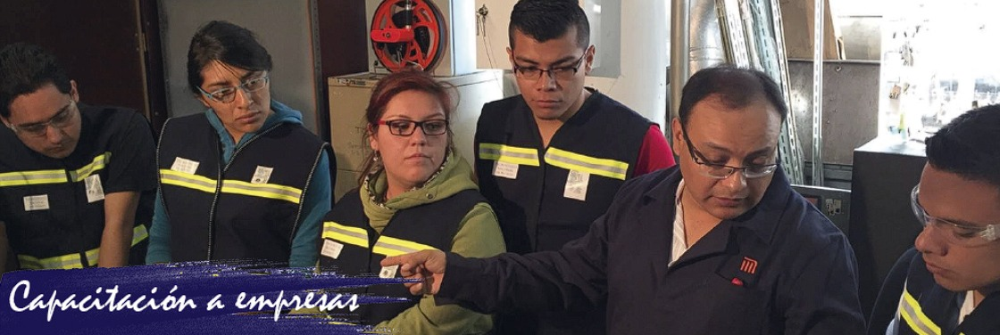
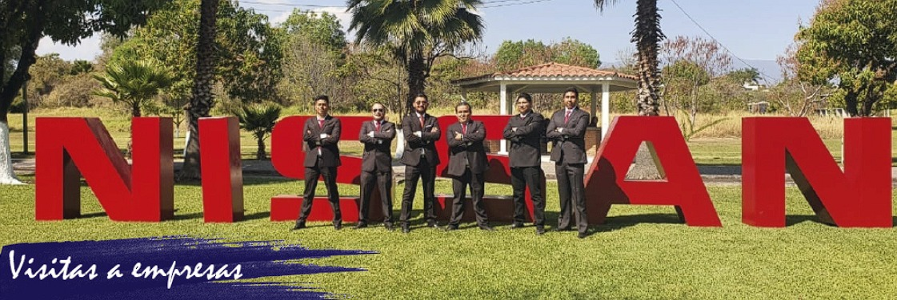
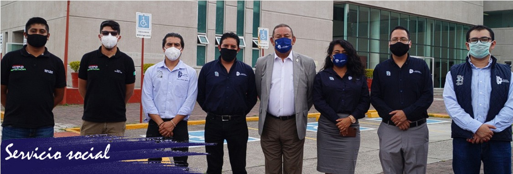
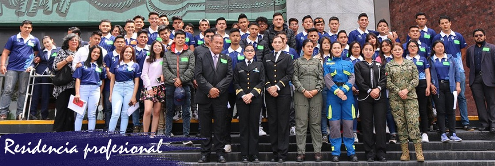
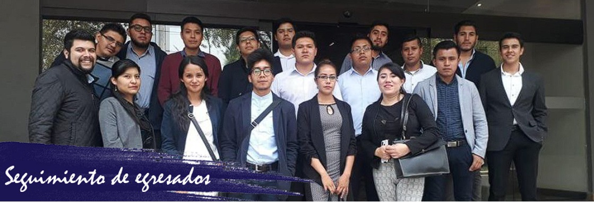
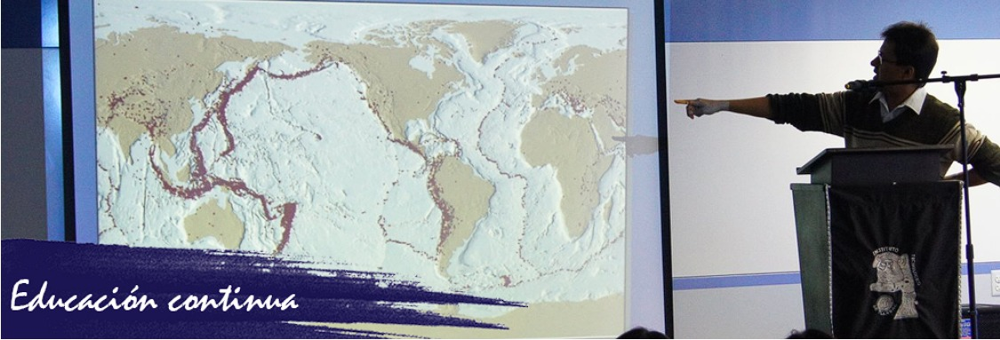
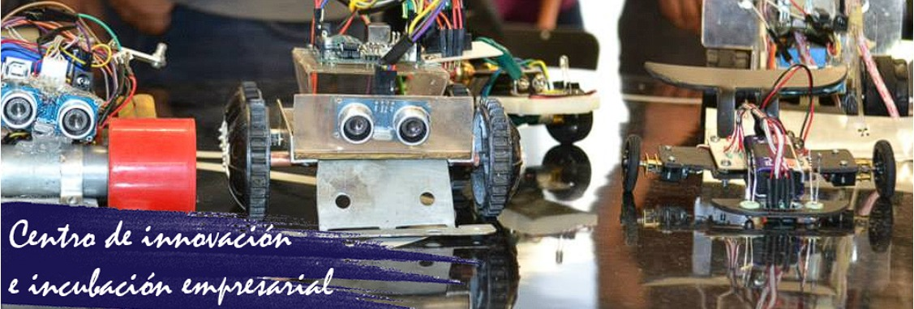

Vinculación
~ Tecnm Tlahuac
Índice
Podemos darle un vistazo a el apartado de empresas del Tecnm Tlahuac ❤️
"LA ESENCIA DE LA GRANDEZA RADICA EN LAS RAÍCES"
Empresas

A continuación, podrás descargar nuestro catálogo especializado en capacitaciones para empresas, con cursos empresariales o para organizaciones, todos los cursos están creados por especialistas en la materia a impartir. Así mismo si tienes alguna necesidad específica en tu empresa y necesitas que creemos un curso que sea hecho justo a la medida también podemos ofrecerte esta opción, por lo que solicitamos mandar correo a s.externos@tlahuac.tecnm.mx para contactarte a la brevedad. Descarga aquí el catálogo de cursos.Podemos darle un vistazo a las visitas del Tecnm Tlahuac ❤️
"LA ESENCIA DE LA GRANDEZA RADICA EN LAS RAÍCES"
VISITAS
2.- Selecciona la visita del sitio de tu interés. En caso de no encontrar la institución de tu interés puedes ponerte en contacto con la coordinación de visitas al correo visitas@tlahuac.tecnm.mx.
3.-Una vez pactada la visita deberás entregar los formatos debidamente requisitados y firmados al correo visitas@tlahuac.tecnm.mx. Solicitud de visita
4.-La coordinación de visitas a empresas te hará llegar la información necesaria para que puedas realizarla sin ningún contratiempo.

Las visitas a empresas son un medio para conocer el funcionamiento, visión estratégica, y sistemas de gestión del resto de las compañías de la Fundación. Además, se explican aquellos puntos en los que la empresa visitada se considera especialmente buena, incidiendo especialmente en todos aquellos que pueden ser de verdadera utilidad para el resto de empresas. Si deseas realizar una visita a alguna empresa sigue estos pasos: 1.- Descarga el listado de empresas AQUÍ2.- Selecciona la visita del sitio de tu interés. En caso de no encontrar la institución de tu interés puedes ponerte en contacto con la coordinación de visitas al correo visitas@tlahuac.tecnm.mx.
3.-Una vez pactada la visita deberás entregar los formatos debidamente requisitados y firmados al correo visitas@tlahuac.tecnm.mx. Solicitud de visita
4.-La coordinación de visitas a empresas te hará llegar la información necesaria para que puedas realizarla sin ningún contratiempo.
Podemos darle un vistazo al servicio social de los Tecnm ❤️
"LA ESENCIA DE LA GRANDEZA RADICA EN LAS RAÍCES"
SERVICIO SOCIAL
2.- Desarrollar una conciencia de solidaridad y compromiso con la sociedad a la que pertenece.
3.- Aplicar y desarrollar competencias profesionales.
Proceso de Servicio Social
Guía de Servicio Social
Descarga aquí el Catálogo De Dependencias
Trámite de constancia de avance:
Contacto: (55) 7312-5616 Ext 119 de Lunes a Viernes de 10 a 16 hrs.

El servicio social es la actividad que con carácter temporal y obligatorio realizan los alumnos de los planteles del Tecnológico Nacional de México, como una retribución a la sociedad a la que pertenecen. Artículo 5° Constitucional relativo a las profesiones en la ciudad de México. La finalidad del servicio social es: 1.- Fortalecer la formación integral del estudiante.2.- Desarrollar una conciencia de solidaridad y compromiso con la sociedad a la que pertenece.
3.- Aplicar y desarrollar competencias profesionales.
Proceso de Servicio Social
Guía de Servicio Social
Descarga aquí el Catálogo De Dependencias
Trámite de constancia de avance:
Contacto: (55) 7312-5616 Ext 119 de Lunes a Viernes de 10 a 16 hrs.
Podemos ver el apartado de residencias profesionales del Tecnm Tlahuac ❤️
Residencias Profesionales
Solicitud de carta presentación
Descarga aquí el Catálogo De Dependencias


La Residencia Profesional es un proceso educativo con valor curricular que permite al estudiante, incorporarse profesionalmente en el sector productivo de bienes y/o servicios, con la finalidad de culminar su plan educativo, esto con el desarrollo de un proyecto enfocado a su perfil profesional, asesorado tanto por profesores del TecNM Campus Tláhuac como por el personal de la Empresa o Instituto donde se desarrolle la ResidenciaSolicitud de carta presentación
Descarga aquí el Catálogo De Dependencias
Podemos ver el seguimiento de egresados del Tecnm Tlahuac ❤️
SEGUIMIENTO DE EGRESADOS
Registro de egresados
Descarga aquí el Catálogo De Dependencias
Contacto: (55) 7312-5616 Ext 119 de Lunes a Viernes de 10 a 16 hrs.
Practicas.promocion@tlahuac.tecnm.mx

El seguimiento de Egresados es un proceso que sirve para incorporar mejoras en el Programa Educativo, con el objetivo de incrementar la efectividad y calidad institucional, a través de la recopilación y análisis de información sobre el desempeño profesional y personal de los egresados, así como de los requerimientos de los sectores empleadores.Registro de egresados
Descarga aquí el Catálogo De Dependencias
Contacto: (55) 7312-5616 Ext 119 de Lunes a Viernes de 10 a 16 hrs.
Practicas.promocion@tlahuac.tecnm.mx
Podemos darle un vistazo a Educacion Continua del Tecnm ❤️
EDUCACION CONTINUA

Podemos darle un vistazo al CIIE Tecnm Tlahuac ❤️
CENTO DE INCUBACIÓN E INNOVACIÓN EMPRESARIAL (CIIE)
Se orienta al emprendedor sobre diferentes opciones de financiamientos que le puedan apoyar.
La metodología implementada es el Modelo de Incubación de Empresas del Tecnológico Nacional de México, el cual integra las siguientes etapas:
Scouting.- Buscando ideas emprendedoras. Tiene como objetivo identificar emprendedores e ideas de emprendimiento factibles de realizarse

El Centro de Incubación e Innovación Empresarial (CIIE), es un espacio donde todo aquel que tenga una idea para desarrollar una idea de negocio, tendrá la oportunidad de conocer y aprender el proceso de emprendimiento por medio de asesorías y herramientas administrativas que le permitirán poner en marca su idea.Se orienta al emprendedor sobre diferentes opciones de financiamientos que le puedan apoyar.
La metodología implementada es el Modelo de Incubación de Empresas del Tecnológico Nacional de México, el cual integra las siguientes etapas:
Scouting.- Buscando ideas emprendedoras. Tiene como objetivo identificar emprendedores e ideas de emprendimiento factibles de realizarse
Creating.- Creando tu negocio. Durante esta fase se desarrolla el modelo y plan de negocio de la empresa.
Tracing.- Siguiendo tus logro. La fase considera el seguimiento de los indicadores que permiten a una empresa conocer su desempeño a través de identificar los empleos generados, empleos conservados, las ventas, etc.
Contacto: (55) 7312-5616 Ext 304 de Lunes a Viernes de 10 a 16 hrs.
Correo: ciie_tlahuac@tecnm.mx
Convocatorias
https://posible.org.mx/
http://www.itsmotul.edu.mx/ciie
Tracing.- Siguiendo tus logro. La fase considera el seguimiento de los indicadores que permiten a una empresa conocer su desempeño a través de identificar los empleos generados, empleos conservados, las ventas, etc.
Contacto: (55) 7312-5616 Ext 304 de Lunes a Viernes de 10 a 16 hrs.
Correo: ciie_tlahuac@tecnm.mx
Convocatorias
https://posible.org.mx/
http://www.itsmotul.edu.mx/ciie
Muchas gracias
~ Canales Paez Rafael
~
~
~ Canales Paez Rafael
~
~